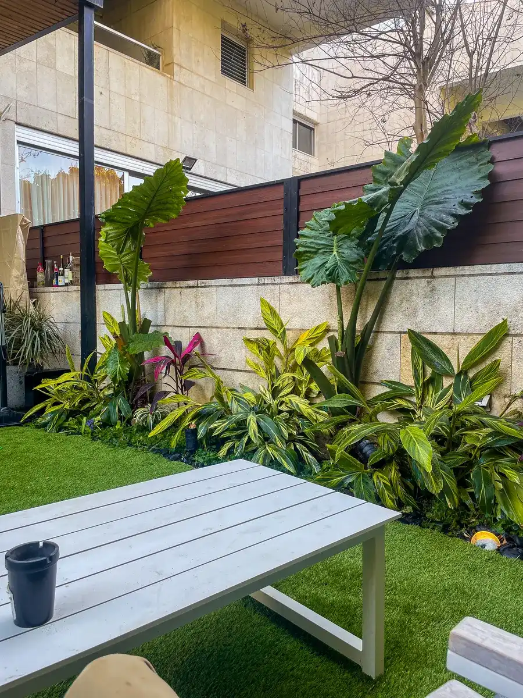
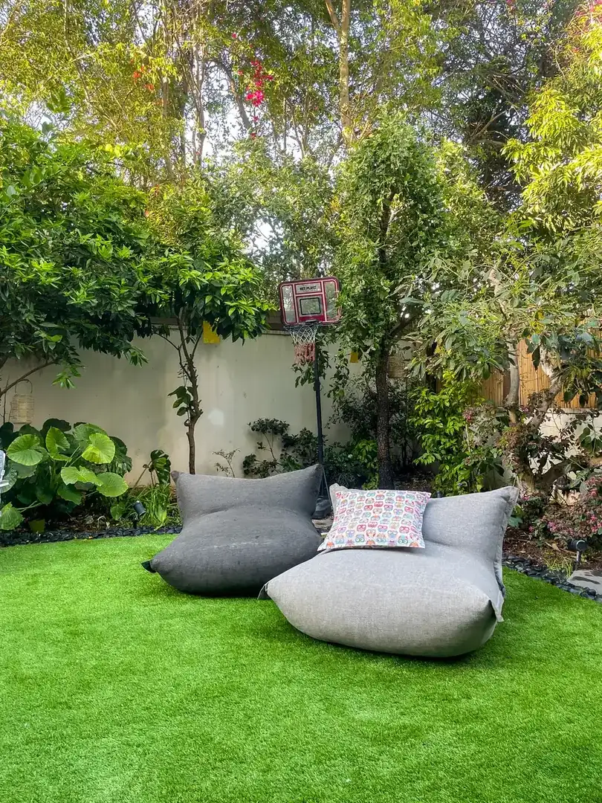
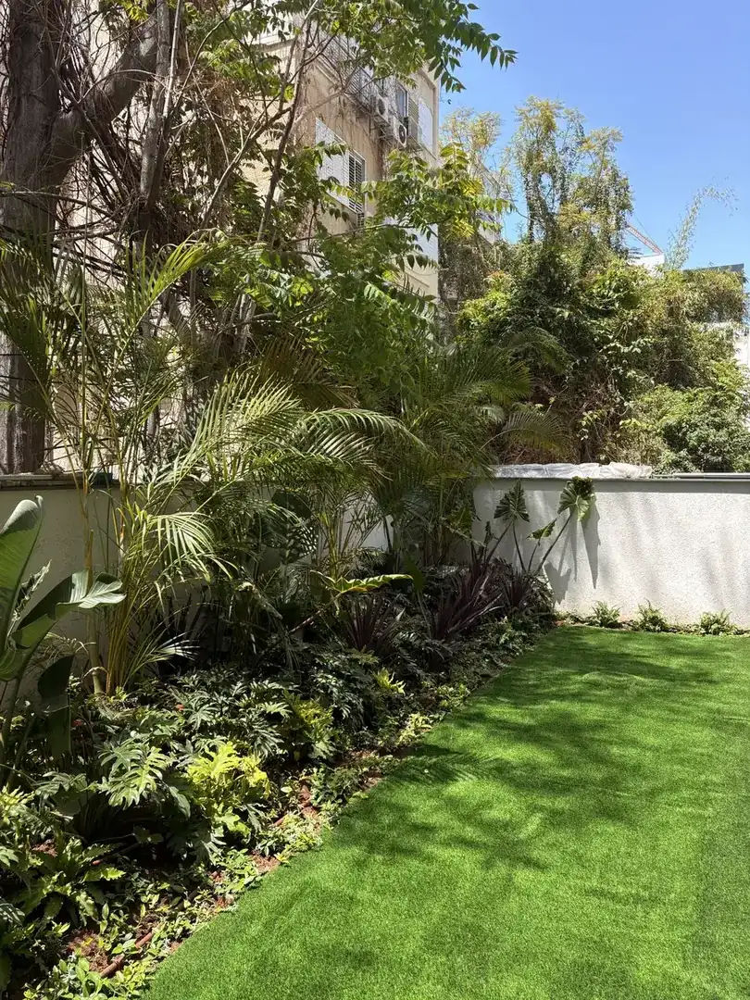
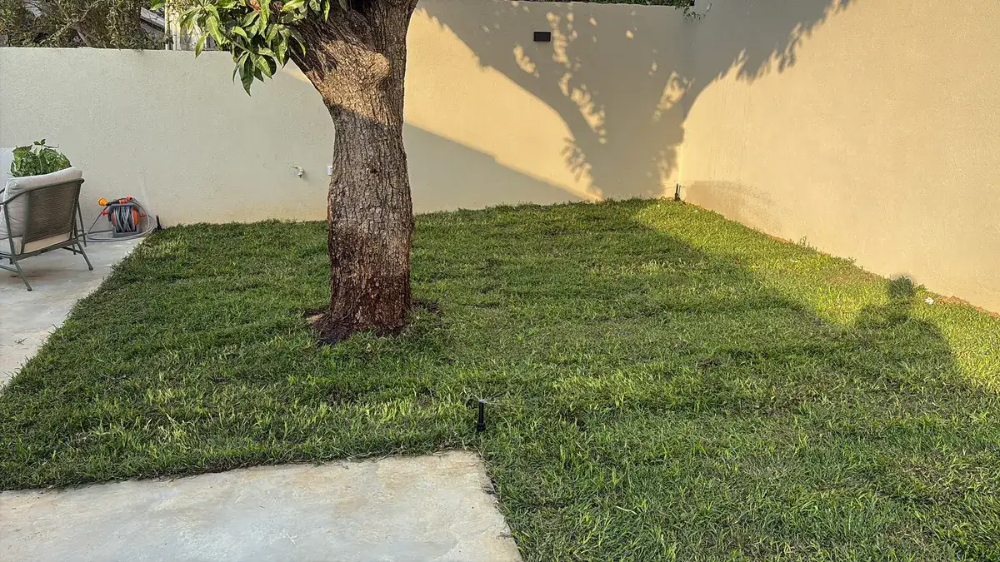
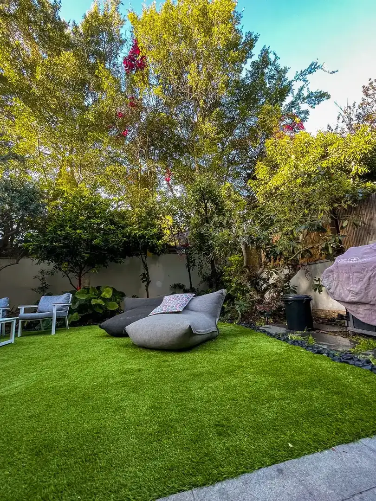
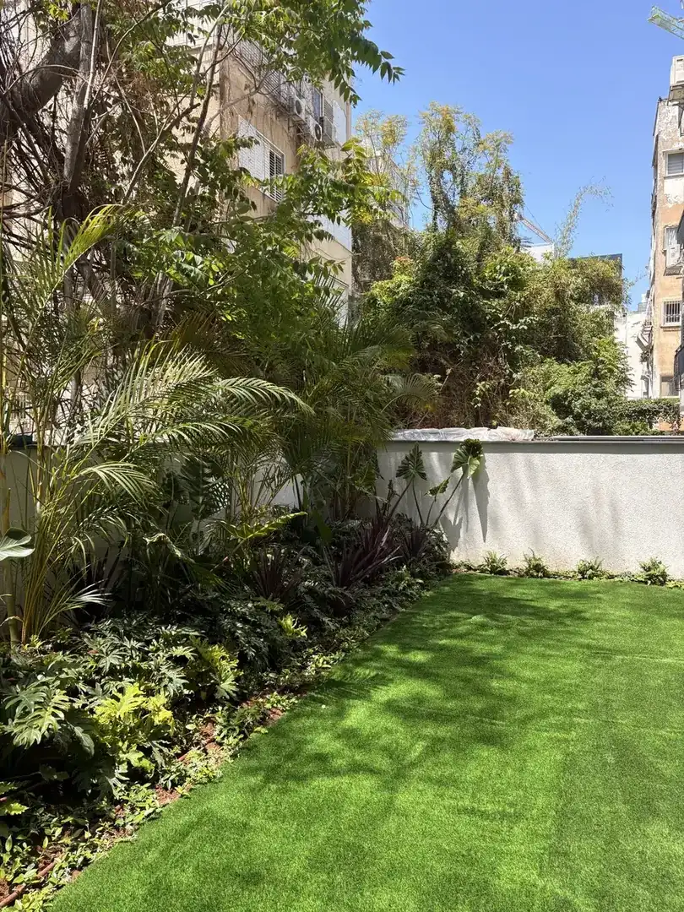
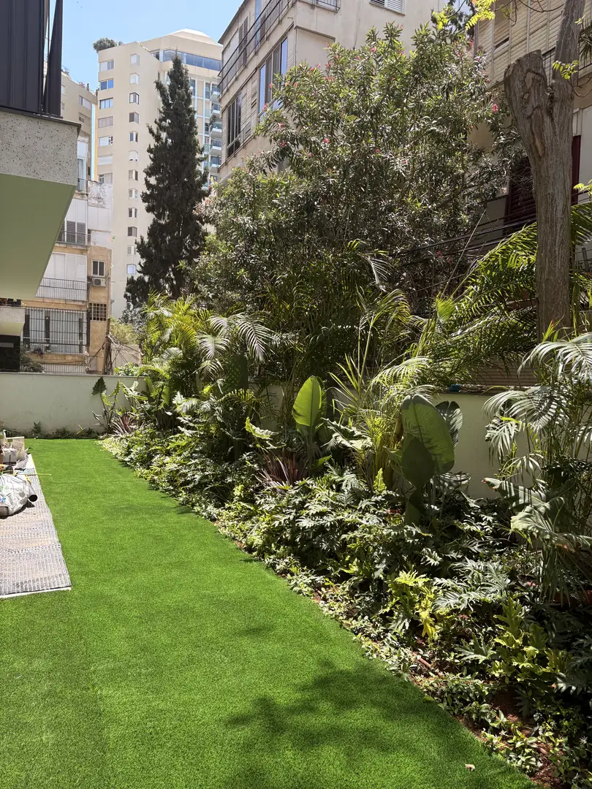
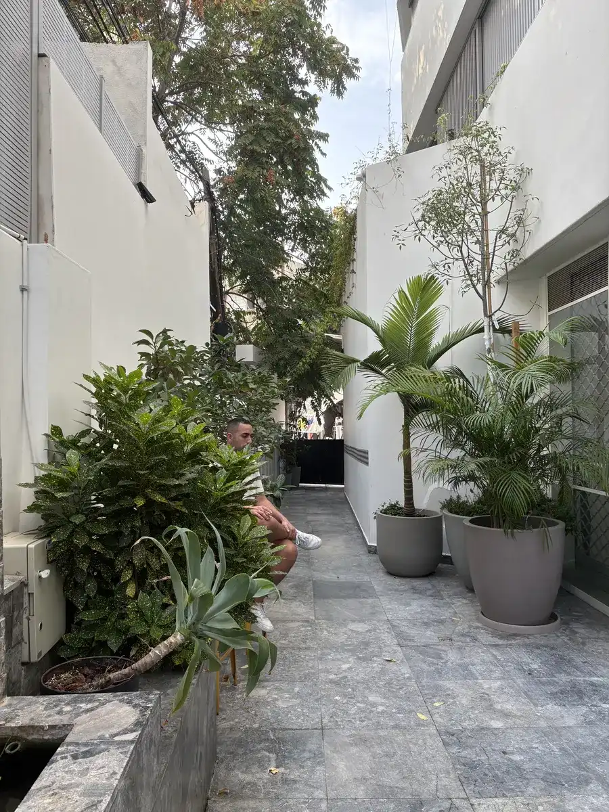
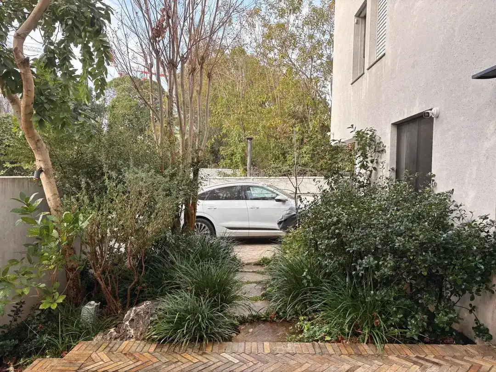

בית פרטי, דירת גן או מושב. גן פרא מתכננת ומקימה את הגינה כולה — תשתית, השקיה, צמחייה ותאורה. צוות אחד מהאדמה החשופה ועד העץ האחרון.
שלחו הודעה עכשיועונים בהקדם, בלי התחייבות
תשתית, צמחייה וגימור. מתוכננים יחד, מבוצעים על ידי צוות אחד
יישור, ניקוז ואדמת גן. מה שלא רואים בסוף, אבל מרגישים שנים
דשא טבעי או סינתטי, עם השקיה אוטומטית שמכוונת לעונה
מינים שנבחרים לשמש, לקרקע ולקצב החיים שלכם. כולל עצים ממשתלות נבחרות
שבילים, פינות ישיבה ותאורת גן שמאריכה את הערב בחוץ
הפרויקטים שלנו
רמת החייל · צהלה · מושב חצב · תל אביב









עפר, השקיה, צמחייה וגימור. אתם לא מתאמים בין ספקים
ניקוז, אדמה והשקיה נסגרים קודם. ככה התוצאה מחזיקה שנים
רקע מדעי בבחירת צמחים לאקלים ולקרקע של מרכז הארץ
עץ נכון משנה גינה. אנחנו יודעים איפה למצוא אותו
עוקבים אחרי הצמחייה גם אחרי המסירה, ומחליפים מה שלא נקלט
מי שהקים את הגינה הוא הנכון ביותר לשמור עליה
הקמת גינות קרקע בתל אביב וגוש דן: גן פרא מתכננת ומקימה גינות לבתים פרטיים, דירות גן ווילות — מעבודות התשתית והניקוז, דרך מערכת ההשקיה והדשא, ועד עצים בוגרים, ריצוף ותאורת גן. אפשר להתחיל מתכנון מפורט ולהמשיך לתחזוקה חודשית אחרי המסירה.
כמה זה עולה? טווח העלויות של גינת קרקע רחב ותלוי בתשתית, בגודל ובבחירות. מדריך המחירים המלא שלנו מפרט לפי סוגי עבודה.
בואו נדבר
שלחו כמה תמונות של החצר בוואטסאפ, נחזור אליכם עם כיוון ראשוני ופגישה בשטח
שלחו הודעה עכשיועונים בהקדם · בלי התחייבות · או מלאו שאלון אפיון קצר ←